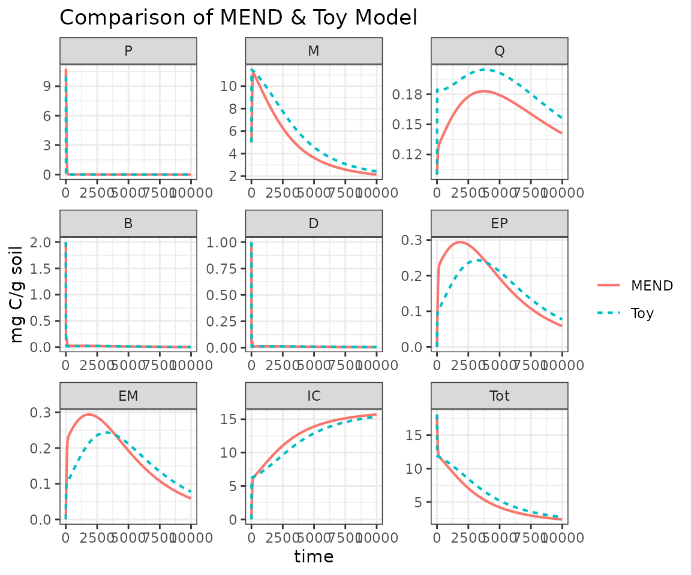

Build Toy Model
Build-Toy-Model.RmdAfter following the installation instructions you should be ready to follow along with this tutorial where we will walk you through how to build your own toy model, which you can compare with one of the pre built model configurations.
library(MEMC) # MEMC should already be installed, see installation instructions.
library(ggplot2) # package used to visualize results
library(knitr) # makes nice tables
library(magrittr) # import the %>% pipeline
# set a theme to use in all the plots
theme_set(theme_bw() + theme(legend.title = element_blank()))Save a copy of the default parameters and initial state values included in the package.
param_table <- MEMC::default_params
initial_state <- MEMC::default_initialSet up a time vector.
# Set up a time vector
t <- seq(from = 1, to = 1e4, by = 10)Using the configure_model users can make decision about
which dynamics to use when modeling the DOM and POM decomposition and MB
decay.
toy_model <- configure_model(params = param_table,
state = initial_state,
name = "Toy",
DOMdecomp = "ECA",
POMdecomp = "LM")
#> |model |DOMdecomp |POMdecomp |MBdecay |
#> |:-----|:---------|:---------|:-------|
#> |Toy |ECA |LM |DD |Solve the toy model and the default MEND configuration.
toy_out <- solve_model(toy_model, t)
mend_out <- solve_model(MEND_model, t)Compare configurations
| name | table | params | state | |
|---|---|---|---|---|
| toy_model | Toy | list(model = “Toy”, DOMdecomp = “ECA”, POMdecomp = “LM”, MBdecay = “DD”) | list(parameter = c(“V.p”, “K.p”, “V.m”, “K.m”, “V.d”, “K.d”, “f.d”, “g.d”, “p.ep”, “p.em”, “r.ep”, “r.em”, “Q.max”, “K.ads”, “K.des”, “dd.beta”, “Input.P”, “Input.D”, “Input.M”, “CUE”), description = c(“maximum specific decomposition rate for P by EP”, “half-saturation constant for decomposition of P”, “maximum specific decomposition rate for M by EM”, “half-saturation constant for decomposition of M”, “maximum specific uptake rate of D for growth of B”, “half-saturation constant of uptake of D for growth of B”, |
“fraction of decomposed P allocated to D”, “fraction of dead B allocated to D”, “fraction of mR for production of EP”, “fraction of mR for production of EM”, “turnover rate of EP”, “turnover rate of EM”, “maximum DOC sorption capacity”, “specific adsorption rate”, “desorption rate”, “strength of density dependent microbial decay”, “POM input”, “DOM input”, “M input”, “carbon use efficiency”), units = c(“mgC mgC^-1 h^-1”, “mgC / g soil”, “mgC mgC^-1 h^-1”, “mg C/g soil”, “mgC mgC^-1 h^-1”, “mg C/g soil”, NA, NA, NA, NA, “mgC mgC^-1 h^-1”, “mgC mgC^-1 h^-1”, “mgC / g soil”, “mgC mgC^-1 h^-1”, “mgC mgC^-1 h^-1”, NA, “mg C”, “mg C”, “mg C”, ““), value = c(14, 50, 0.25, 250, 3, 0.25, 0.5, 0.5, 0.01, 0.01, 0.001, 0.001, 3.4, 0.006, 0.001, 2, 0, 0, 0, 0.4)) |c(P = 10, M = 5, Q = 0.1, B = 2, D = 1, EP = 1e-05, EM = 1e-05, IC = 0, Tot = 18.10002) | |MEND_model |MEND |list(model =”MEND”, DOMdecomp = “MM”, POMdecomp = “MM”, MBdecay = “DD”) |list(parameter = c(“V.p”, “K.p”, “V.m”, “K.m”, “V.d”, “K.d”, “f.d”, “g.d”, “p.ep”, “p.em”, “r.ep”, “r.em”, “Q.max”, “K.ads”, “K.des”, “dd.beta”, “Input.P”, “Input.D”, “Input.M”, “CUE”), description = c(“maximum specific decomposition rate for P by EP”, “half-saturation constant for decomposition of P”, “maximum specific decomposition rate for M by EM”, “half-saturation constant for decomposition of M”, “maximum specific uptake rate of D for growth of B”, “half-saturation constant of uptake of D for growth of B”, “fraction of decomposed P allocated to D”, “fraction of dead B allocated to D”, “fraction of mR for production of EP”, “fraction of mR for production of EM”, “turnover rate of EP”, “turnover rate of EM”, “maximum DOC sorption capacity”, “specific adsorption rate”, “desorption rate”, “strength of density dependent microbial decay”, “POM input”, “DOM input”, “M input”, “carbon use efficiency”), units = c(“mgC mgC^-1 h^-1”, “mgC / g soil”, “mgC mgC^-1 h^-1”, “mg C/g soil”, “mgC mgC^-1 h^-1”, “mg C/g soil”, NA, NA, NA, NA, “mgC mgC^-1 h^-1”, “mgC mgC^-1 h^-1”, “mgC / g soil”, “mgC mgC^-1 h^-1”, “mgC mgC^-1 h^-1”, NA, “mg C”, “mg C”, “mg C”, ““), value = c(14, 50, 0.25, 250, 3, 0.25, 0.5, 0.5, 0.01, 0.01, 0.001, 0.001, 3.4, 0.006, 0.001, 2, 0, 0, 0, 0.4)) |c(P = 10, M = 5, Q = 0.1, B = 2, D = 1, EP = 1e-05, EM = 1e-05, IC = 0, Tot = 18.10002) |
Compare model outputs.
rbind(toy_out, mend_out) %>%
ggplot(aes(time, value, color = name, linetype = name)) +
geom_line(size = 0.75) +
facet_wrap("variable", scales = "free") +
labs(title = "Comparison of MEND & Toy Model ",
y = unique(toy_out$units)) 